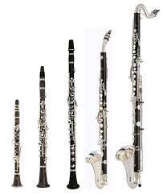

juan jose yepes
Bienvenidos a la casa del clarinete
La casa del clarinete
Sabaes algo sbre el clarinete?
Pues aqui encontraras todo lo que necesites saber para ser todo un erudito sobre este instrumento.
Las primeras referencias al clarinete se encuentran en mosaicos y relieves de la Antigua Mesopotamia, 3000 años a.C. En los vestigios arqueológicos se encuentran imágenes de instrumentos de viento sin poder definir exactamente cuál es. En Egipto, había además el clarinete y el oboe recibían el mismo nombre “ma”. Los clarinetes primigenios atendían a una fisionomía definida: un tubo de madera que encerraba una columna de aire y que para producir el sonido usaba una fina lengüeta que ponía el aire en vibración..
Tipos de clarinetes
Como es el sonido que emite cada uno desde el punto de vista teorico @clarinet
Los clarinetes mas pequeños son el requinto y el soprano los clarinetes mas grandes son el alto y el bajo
Los dos primeros clarinetes son instrumentos que alcanzan notas agudas, eso quiere decir que entre los sonidos su funcion es hacer la notas agudas, copn esto tambien tinene la responsabilidad de hacer melodias y llevar el brillo en cualquier obra que se interprete con ellos. Los dos ultimos clarinetes que son los mas grandes alcanzan notas mas bajas, esto quiere decir que su funcion es dar base a las melodias esto significa que para que el brillo de los clarinetes agudos tenga un contraste y no se vuelva desagradable de al escucharlo los bajos complementan con un acompañamiento sin el cual la melodia se oiria incomleta
Clarinete soprano
soy el mas conocido de los clarinetes
Post mas geniales
-
franz
mi clarinete favorito es el requinto -
 sidney bechet
sidney bechet
sabinne tu favorito es el soprano siempre lo dices! -
 sabinne meyer
sabinne meyer
Todos saben que el requinto me facina -
benny godman
el requinto es poco utilizadoya que a nadie le gusta>
Tags
musica usos clarinete orquesta historia interprete tonos melodia vida Musica de vida
Inspiration


Follow Me
Subscribe
Enter your e-mail below and get notified on the latest blog posts.